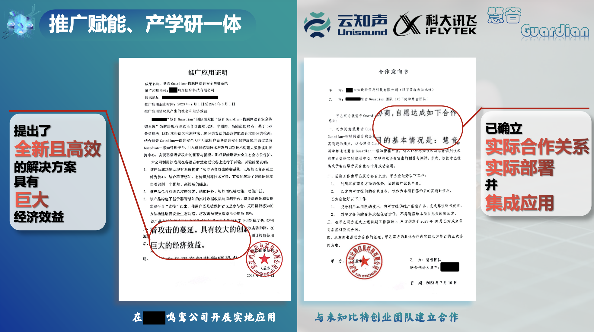

Smart Sound Guardian
物联网语音安全领航者
2024年"中国高校计算机大赛-网络技术挑战赛" 作品
项目背景
在当今高度互联的世界中，语音控制技术被广泛应用于各种设备，如智能家居、汽车和移动终端。然而，随着语音交互的普及，语音攻击的风险也逐渐增加。攻击者可以通过恶意音频信号，获取个人隐私、造成财产损失，甚至威胁生命安全。
Smart Sound Guardian 项目应运而生，旨在开发一个高度智能化的语音安全系统，通过多维度的音频特征提取和语义分析，保护用户免受语音攻击。我们致力于构建一个综合性的安全防护体系，为用户的语音交互提供可靠的保障。

语音攻击带来的挑战
- 隐私泄露： 语音控制设备记录的音频可能被恶意利用，导致个人隐私泄露。
- 财产损失： 通过语音控制的支付功能被不法分子滥用，可能导致财产损失。
- 安全威胁： 智能家居和车载系统中的语音控制功能被攻击，可能危及用户的生命安全。

语音攻击的识别难度大，传统的防御手段在面对这些新型威胁时显得捉襟见肘。因此，我们需要更加智能和有效的解决方案。
Smart Sound Guardian 的解决方案
我们提出了一套全面的语音安全防护系统，结合先进的机器学习算法和实时数据分析，提供以下核心功能：
- 多维音频特征提取： 基于 MFCC 参数，对音频数据进行详细的频率和能量分析，以检测异常音频信号。
- 语义攻击检测： 通过语义分析技术，识别恶意指令并实时响应。
- 态势可视化： 构建智能语音态势感知平台，可视化展示攻击源、攻击路径和受影响区域。
- 预警系统： 在检测到异常活动时，及时向用户发出预警，并提供建议的应对措施。

系统核心技术
- MFCC 参数提取： 利用 MFCC（梅尔频率倒谱系数）参数，进行音频的精细化分析，从中提取出能够有效表征音频特征的信息。
- 多模态攻击检测： 结合语音信号中的频率、能量和时域特征，构建多模态检测模型，提高对复杂语音攻击的识别精度。
- 基于 SVM 的音频分类： 使用支持向量机（SVM）算法，对音频信号进行分类，以区分正常语音和恶意语音。
- 实时监测与预警： 系统可以实时监控音频流，当检测到潜在威胁时，自动触发预警并记录相关数据。


研究成果与应用
Smart Sound Guardian 系统已在多个实验中表现出色，以下是我们的一些关键成果：
- 高识别率： 实验结果表明，系统的语音攻击识别准确率最高可达 96.2%，在多种复杂环境下均表现出稳定的检测能力。
- 低误报率： 通过优化算法和模型，系统的误报率保持在 5% 以下，显著减少了误报警告的发生。
- 大数据支持： 系统集成了一个庞大的语音数据集，通过不断学习和更新，持续提升检测性能。
- 可视化工具： 系统提供了实时态势可视化功能，帮助用户直观了解当前的安全状态及潜在威胁。

产学研一体
本作品已落实两项软著和一篇学术论文，并已经入选国家级大学生创新创业计划，一项国家发明专利正在审核通过中

本作品已经在武汉鸣鸾公司开展实地应用，并与未知比特团队建立合作，促进应用研发过程；

系统介绍视频
观看以下视频，了解Smart Sound Guardian系统的工作原理和核心功能。
联系我们
如需了解更多信息或有合作意向，欢迎通过以下方式联系我们：